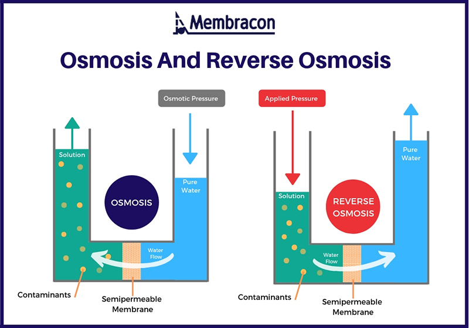

Can be removed with Adsorption, chlorination, chemical coagulation, ion exchange, and reverse osmosis are all effective at removing Methomyl from water. Mythomyl has a relatively short half-life in soil of 14-50 days depending on soil moisture.